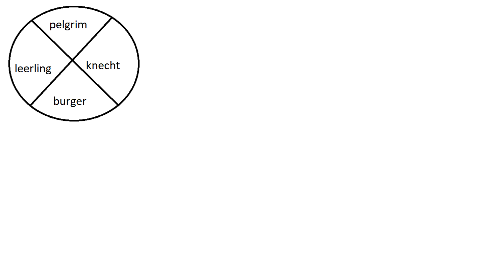

2 ETHISCHE BEGRIPPEN EN HET MORELE LEVEN
bidden
het goede doen
en Gods tijd verwachten
Dietrich Bonhoeffer, 1944
In het eerste hoofdstuk van Waarden en Verantwoordelijkheid hebben we de Bijbelse ethiek gedefinieerd d.m.v. het begrip wijsheid. Ethiek in de Bijbel is wijsheid en wijsheid is goed weten te leven. Voor de christen is het begin en de meest fundamentele voorwaarde van wijsheid, en dus ook van ethiek, de vreze des Heren, die wij begrepen als geloof, hoop en liefde. Goed leven in de vreze des Heren is niet eenvoudig vanwege onze dubbele geestelijke werkelijkheid. Wij zijn zondaar vanwege onze onreinheid, leugens en hardheid en tegelijk zijn we rechtvaardig en onschuldig vanwege de vergeving van al onze zonden door het offer van de Here Jezus en door de vrucht van de Geest, die onze heiligheid is. De christelijke ethiek beweegt zich in deze dubbele werkelijkheid. Te meer gecompliceerd door haar dubbele oriëntatie, op de wet en tegelijk op het evangelie. Zij vindt evenwel haar ruimte in het veld van de wijsheid.
Om de ethiek goed te begrijpen, moeten we de begrippen die die we gewoonlijk gebruiken voldoende duidelijk hebben.
2.1 Basisconcepten van de ethiek
Moraal - mos-mores (lat.): gebruik, gewoonte. De moraal is het totaal van morele gebruiken, gewoonten, attitudes, acties en handelingen. Moreel: de morele kwaliteit van onze handelingen en gewoonten. Moralisme: houding waarbij een moraal wordt opgelegd (op persoonlijk, sociaal, religieus of politiek niveau).
Ethiek - èthos èthè (gr.): gebruik, gewoonte - 1Cor.15.33. Ethiek is de persoonlijke, collectieve, wetenschappelijke (filosofische) of religieuze reflectie op de moraal, met als doel het goede leven te begrijpen en te definiëren.
Morele waarden: elk moreel systeem moet weten wat de fundamentele en onaantastbare elementen van het goede leven zijn. Welke elementen altijd en in elk geval verdedigd moeten worden.
De normen en regels binnen een moreel systeem dienen om de waarden te beschermen. Bijvoorbeeld: de waarde van het leven wordt bevestigd door de regel: pleeg geen (zelf)moord, dood niet. Nooit, in geen geval?
Motieven zijn de morele en praktische motivatie van iets te willen en te doen. Er is altijd een reden waarom je het één of het ander doet of wilt.
Deugden zijn de geïnterioriseerde – pure of abstracte – waarden, motieven, normen en regels. De zeven klassieke en christelijke deugden zijn: rechtvaardigheid, wijsheid, dapperheid, gematigdheid, geloof, hoop, liefde.
Wetten (positief recht), gebruiken en tradities geven formele uitdrukking aan het systeem van waarden en morele normen: (1) ze ordenen het politieke, economische, sociale, culturele, juridische en religieuze leven; (2) ze lossen conflicten tussen verschillende morele momenten op; (3) ze leggen sancties op. Wetten hebben altijd de neiging morele waarden en normen te vervangen, zodat deugd verandert in legalisme. In een morele crisis (relativisme en moreel cynisme) beslissen de politieke autoriteiten de gangbare moraal door middel van wetten (staatsmoralisme, totalitarisme).
Het geweten (hart) is de erkenning van de persoonlijke morele verantwoordelijkheid met betrekking tot een handeling, een beslissing, een idee of een gedachte, volgens de waarden die men verdedigt, kent of intuïtief ervaart. Het geweten is een aangeboren moreel orgaan dat wordt gevormd - of misvormd - door erfelijkheid, opvoeding, scholing, cultuur en levenservaring. Als we zeggen dat de Heilige Geest directe toegang heeft tot het hart, wijzen we op de invloed die de Heilige Geest wel of niet uitoefent op het geweten.
2.2 Het morele leven: pelgrim, leerling, knecht en burger
We herhalen dat de christelijke ethiek de christen observeert in zijn dubbele werkelijkheid, als zondaar en als een rechtvaardige. Hij beweegt zich in de ruimte tussen wet en genade. De heiligheid die God ons garandeert, staat ons nooit toe de zonde te vergeten. Anderzijds, de zonde, die ons altijd vergezelt, kan de heiligheid die we in Christus hebben niet ontkennen. Deze dubbele werkelijkheid manifesteert zich in alle levensomstandigheden, die we kunnen samenvatten in vier basiswoorden die vorm geven aan het verantwoordelijke leven.
De christen is een pelgrim in deze wereld en als zodanig hoopt hij zijn ware vaderland te bereiken, namelijk het Koninkrijk van God (zie Hebr.11.13; 1P. 1.2,11). De ethiek behoort ons te helpen onszelf te beschermen tegen de verleidingen van wereld op onze pelgrimstocht naar het hemelse Jeruzalem door een moreel goed en zuiver te leven (1Joh.2.15; Jakobus 1:27).
Tegelijkertijd is de christen een discipel, een leerling die in navolging van Christus, volgens nieuwe principes leert leven in de wereld van de zonde (zie Matt. 5-7; Rom.12.2).
Als dienaar van God is de christen geroepen tot het toepassen van de aangeleerde principes op alle terreinen van het leven. Hij is een koning als hij deze principes laat gelden in zijn eigen domein. Hij is priester als hij ze gebruikt als een zegen voor de wereld en hij is profeet als hij ze aankondigt in de wereld (zie 1P.2.9,10; Ex. 19.6). Als dienaar laat hij zich leiden door de wet van God.
Als (wereld)-burger aanvaardt de christen zijn huwelijks- en familieverhoudingen en vervolgens all sociale, economische, culturele, politieke en religieuze verantwoordelijkheid, zelfs militaire, om de wereld bewoonbaar te maken en te houden. Al burger laat hij zich leiden door de wijsheid van de Heilige Geest.

2.3 Oefeningen
Bespreek de basisconcepten van de ethiek.
Wat zijn waarden en deugden?
Stel voor je zelf vast hoe je / in hoeverre je pelgrim bent, leerling, dienaar en burger.